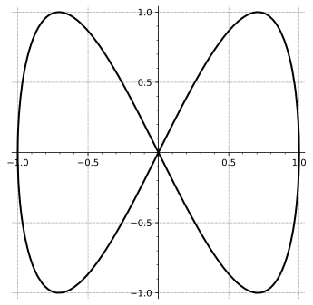

Section10.2Calculus of Vector-Valued Functions of One Variable
Motivating Questions
What do we mean by the derivative of a vector-valued function and how do we calculate it?
What does the derivative of a vector-valued function measure?
What do we mean by the integral of a vector-valued function and how do we compute it?
How do we describe the motion of a projectile if the only force acting on the object is acceleration due to gravity?
In your first calculus course you looked at what was measured by the new operations of limits, derivatives, and integrals. Each of these ideas and its applications was likely introduced as a way to measure something specific by approximating the measurement and then looking at how to improve this approximation. Limits offered a powerful tool to precisely describe how these approximations would converge to the relevant measurement. This is the classic calculus approach: 1) approximate the measurement, 2) quantify how the approximation changes on a finer scale, and 3) use a limit to show how the approximate calculus converge to the measurement of interest.
In this course, we will use this structure to investigate properties of new kinds of functions, equations, and graphs. In this section, we want to investigate the meaning of limits, derivatives, and integrals on our new class of functions, vector valued functions of one variable. Additionally, we will connect these measurements to properties of curves in space as the graphs of these vector valued functions. As we expand our perspective and scope of study, you will likely see deeper meanings in the definitions of limits, derivative, and integrals from your first calculus course.
Preview Activity10.2.1.
As the only employee of Steer Clear, you have decided that you need to understand how the timing of position measurements will change different measurements needed for your self driving car. You decide to drive in a figure eight path described by \(\vr_8(t)=\langle \cos(t),\sin(2t) \rangle \) for \(0 \leq t \leq 2 \pi\text{.}\) A plot of this path is given in Figure10.2.1.

Figure10.2.1.A plot of the figure eight curve given by \(\vr_8(t)=\langle \cos(t),\sin(2t) \rangle \) for \(0 \leq t \leq 2 \pi\)
(a)
In order to understand how often to have your software collect location data, you decide to look at your position for a few different times. Calculate the following and draw the output vectors of \(\vr_8\) on a plot of the curve. You should state your answer with components rounded to three decimal places.
\(\displaystyle \vr_8(3)\)
\(\displaystyle \vr_8(3.1)\)
\(\displaystyle \vr_8(3.14)\)
These correspond to the locations that would be sampled if wanted to know the location of our car at \(\vr_8(\pi)\) but collected data every second, every tenth of a second, and hundredth of a second (respectively).
(b)
Write a couple of sentences to describe (geometrically and algebraically) what happens to the output of \(\vr_8(t)\) as \(t\rightarrow\pi\text{.}\)
(c)
Calculate \(\vr_8(\pi)\) and \(\vr_8(\pi)-\vr_8(3)\text{.}\) Plot \(\vr_8(\pi)\text{,}\)\(\vr_8(3)\text{,}\) and \(\vr_8(\pi)-\vr_8(3)\) on a graph of the figure eight curve.
(d)
Compute \(\frac{\vr_8(\pi)-\vr_8(3)}{\pi-3}\) and explain how this calculation is different than the result of the previous step.
(e)
How would you expect \(\frac{\vr_8(\pi)-\vr_8(3.1)}{\pi-3.1}\) to be different than \(\frac{\vr_8(\pi)-\vr_8(3)}{\pi-3}\text{.}\) Use this idea write about what is measured by \(\frac{\vr_8(\pi)-\vr_8(\pi-h)}{h}\) if we look at smaller and smaller values of \(h\text{.}\) Remember to be specific about what aspects of our curve or drive are being measured.
In part10.2.1.b, we examined what the limit of a vector valued function will look like; specifically, the limit of a vector valued function (of one variable) has the same meaning as in your first calculus course. The limit of a function is a measure of what the output approaches as the input gets closer to a particular value. We will not state the formal version of limits of vector valued functions of one variable, but rather will appeal to the very important idea that limits can be defined and calculated componentwise. If \(\vr(t)=\langle x_1(t),\ldots,x_n(t)\rangle\text{,}\) then the limit of \(\vr\) as \(t\rightarrow a\) exists if all of the limits \(x_i(t)\) exist as \(t\rightarrow a\text{.}\) In other words, the limit of a vector valued function of one variable is the same as the limits of the \(n\) component functions organized as a vector.
Subsection10.2.1The Derivative
In single variable calculus, we define the derivative, \(f'\text{,}\) of a given function \(f\) by
provided the limit exists. At a given value of \(a\text{,}\)\(f'(a)\) measures the instantaneous rate of change of \(f\text{,}\) and also tells us the slope of the tangent line to the curve \(y = f(x)\) at the point \((a, f(a))\text{.}\) The definition of the derivative extends naturally to vector-valued functions and curves in space.
Definition10.2.2.
The derivative of a vector-valued function \(\vr\) is defined to be
for those values of \(t\) at which the limit exists. We also use the notation \(\frac{d\vr}{dt}\) and \(\frac{d}{dt}[\vr(t)]\) for \(\vr'(t)\text{.}\)
We will take a moment here to note that both the single variable calculus definition of derivative and Definition10.2.2 have form of the classic calculus approach described above. In particular, both definitions are of the form
\begin{equation*}
\text{derivative}=\lim_{stepsize\rightarrow0} \frac{\text{change in output of function}}{\text{change in input of function}}
\end{equation*}
Let \(\vr\) be the vector-valued function whose graph is shown in Figure10.2.3, and let \(h\) be a scalar that represents a small change in time. The vector \(\vr(t)\) is the blue vector in Figure10.2.3 and \(\vr(t+h)\) is the green vector.
Figure10.2.3.A single difference quotient of a vector valued function
If \(\vr(t)\) determines the position of an object at time \(t\text{,}\) then \(\frac{\vr(t+h)-\vr(t)}{h}\) represents the average rate of change in the position of the object over the interval \([t,t+h]\text{,}\) which is also the average velocity of the object on this interval. Thus, the derivative
is the instantaneous rate of change of \(\vr(t)\) at time \(t\) (for those values of \(t\) for which the limit exists), so \(\vr'(t) = \vv(t)\) is the instantaneous velocity of the object at time \(t\text{.}\) Furthermore, we can interpret the derivative \(\vr'(t)\) as the direction vector of the line tangent to the graph of \(\vr\) at the value \(t\text{.}\)
Figure10.2.4.Snapshots of several difference quotients as \(h\) gets smaller
is the instantaneous rate of change of the velocity of the object at time \(t\text{,}\) for those values of \(t\) for which the limits exists, and thus \(\vv'(t) = \va(t)\) is the acceleration of the moving object.
Both the velocity and acceleration are vector quantities: they have magnitude and direction. By contrast, the magnitude of the velocity vector, \(\Vert \vv(t) \Vert\text{,}\) which is the speed of the object at time \(t\text{,}\) is a scalar quantity.
Subsection10.2.2Computing Derivatives
As we learned in single variable calculus, computing derivatives using the definition is often difficult. Fortunately, properties of the limits and vectors make it straightforward to calculate the derivative of a vector-valued function similar to how we developed shortcut differentiation rules in calculus I. If we breakdown the steps in Definition10.2.2 we notice that
vector subtraction (\(\vr(t+h)-\vr(t)\))
scalar multiplication (multiply by \(\frac{1}{h}\))
evaluate limit as \(h\rightarrow 0\)
are all evaluated componentwise on our vector valued function. Thus we can apply our derivative rules on each component of \(\vr(t)\) to compute the derivative \(\frac{d\vr}{dt}\text{.}\)
Key Idea10.2.5.Efficient calculation of the derivative of a vector-valued function.
If \(\vr(t) = x(t) \vi + y(t) \vj + z(t) \vk\text{,}\) then
for those values of \(t\) at which \(x\text{,}\)\(y\text{,}\) and \(z\) are differentiable.
Proof.
To see why, recall that the limit of a sum is the sum of the limits, and that we can remove constant factors from limits. Thus, as we observed after Preview Activity10.2.1, if \(\vr(t) = x(t) \vi + y(t) \vj + z(t) \vk\text{,}\) it follows that
In first-semester calculus, we developed several important differentiation rules, including the constant multiple, product, quotient, and chain rules. For instance, recall that we formally state the product rule as
There are several analogous rules for vector-valued functions, including a product rules for each of the kinds of multiplication we have defined involving vectors. These rules, which are easily verified, are summarized as follows.
Properties of derivatives of vector-valued functions.
Let \(f\) be a differentiable real-valued function of a real variable \(t\) and let \(\vr\) and \(\vs\) be differentiable vector-valued functions of the real variable \(t\text{.}\) Then
When applying these properties, pay attention to whether the quantities involved as either scalars or vectors. For example, \(\vr(t) \cdot \vs(t)\) defines a scalar function because we have taken the dot product of two vector-valued functions. However, \(\vr(t) \times \vs(t)\) defines a vector-valued function since we have taken the cross product of two vector-valued functions.
In the next several sections of this chapter, we will examine how to utilize the calculus tools above and vector measurements to calculate different properties of curves in space and the associated velocity and acceleration vectors that come from their parameterizations.
I think the elements of the next activity are done other places in developing the splitting of acceleration. I think the calculation portions can be folded into the tangent line activity.
Activity10.2.3.
The left side of Figure10.2.6 shows the curve described by the vector-valued function \(\vr\) defined by
Figure10.2.6.The curve \(\vr(t) = \left\langle 2t-\frac12 t^2 + 1,
t-1\right\rangle\) and its speed.
Find the objects velocity \(\vv(t)\text{.}\)
Find the objects acceleration \(\va(t)\text{.}\)
Indicate on the left of Figure10.2.6 the objects position, velocity and acceleration at the times \(t=0, 2, 4\text{.}\) Draw the velocity and acceleration vectors with their tails placed at the objects position.
Recall that the speed is \(|\vv| = \sqrt{\vv\cdot\vv}\text{.}\) Find the objects speed and graph it as a function of time \(t\) on the right of Figure10.2.6. When is the objects speed the slowest? When is the speed increasing? When is it decreasing?
What seems to be true about the angle between \(\vv\) and \(\va\) when the speed is at a minimum? What is the angle between \(\vv\) and \(\va\) when the speed is increasing? when the speed is decreasing?
Since the square root is an increasing function, we see that the speed increases precisely when \(\vv\cdot\vv\) is increasing. Use the product rule for the dot product to express \(\frac{d}{dt}(\vv\cdot\vv)\) in terms of the velocity \(\vv\) and acceleration \(\va\text{.}\) Use this to explain why the speed is increasing when \(\vv\cdot\va > 0\) and decreasing when \(\vv\cdot\va \lt 0\text{.}\) Compare this to part (d).
One of the most important ideas in first-semester calculus is that a differentiable function is locally linear: that is, when viewed up close, the curve generated by a differentiable function looks very much like a line. Indeed, when we zoom in sufficiently far on a particular point, the curve looks indistinguishable from its tangent line. You can look at Figure9.5.1 at the beginning of Section9.5 for an interactive visualization of this idea.
In the same way, we expect that a smooth curve in 3-space will be locally linear. In Activity10.2.4, we investigate how to find the tangent line to such a curve. Recall from our work in Section9.5 that the vector equation of a line that passes through the point at the tip of the vector \(\vL_0 = \langle x_0, y_0, z_0 \rangle\) in the direction of the vector \(\vu = \langle a, b, c \rangle\) can be written as
\begin{equation*}
\vL(t) = \vL_0 + t \vu.
\end{equation*}
Sketch the curve using some appropriate tool and make a drawing by hand that labels the point at the end of \(\vr(\pi)\text{.}\)
(b)
Find a direction vector for the line tangent to the graph of \(\vr\) at the point where \(t=\pi\text{.}\)
(c)
Find the parametric equations of the line tangent to the graph of \(\vr\) when \(t=\pi\text{.}\)
(d)
On your plot of the curve \(\vr(t)\text{,}\) sketch the tangent line corresponding to \(t = \pi\) and highlight the role of \(\vr'(\pi)\) on your plot.
We see that our work in Activity10.2.4 can be generalized. Given a differentiable vector-valued function \(\vr\text{,}\) the tangent line to the curve at the input value \(a\) is given by
\begin{equation}
\vL(t) = \vr(a) + t \vr'(a).\tag{10.2.1}
\end{equation}
Here we see that because the tangent line is determined entirely by a given point and direction, the point is provided by the function \(\vr\text{,}\) evaluated at \(t = a\text{,}\) while the direction is provided by the derivative, \(\vr'\text{,}\) again evaluated at \(t = a\text{.}\) Note how analogous the formula for \(\vL(t)\) is to the tangent line approximation from single-variable calculus: in that context, for a given function \(y = f(x)\) at a value \(x = a\text{,}\) we found that the tangent line can be expressed by the linear function \(y = L(x)\) whose formula is
Equation(10.2.1) for the tangent line \(\vL(t)\) to the vector-valued function \(\vr(t)\) is nearly identical. Indeed, because there are multiple parameterizations for a single line, it is even possible to write the parameterization as
(For example, in Equation(10.2.1), \(\vL(0) = \vr(a)\text{,}\) so the lines parameterization starts at \(t = 0\text{.}\) When we write the parameterization in the form of Equation(10.2.2), \(\vL(a) = \vr(a)\text{,}\) so the lines parameterization starts at \(t = a\text{.}\))
As we will learn in Chapter11, a smooth surface in 3-space is also locally linear. That means that the surface will look like a plane, which we call its tangent plane, as we zoom in on the graph. It is possible to use tangent lines to traces of the surface to generate a formula for the tangent plane; see Exercise10.2.6.15 for more details.
Subsection10.2.4Integrating a Vector-Valued Function
Recall from your calculus of scalar valued functions, that the definite integral of a function \(f(x)\) on the interval \([a,b]\) is defined as
Where \(\Delta x_i\) is the width of the interval from \([x_{i-1},x_i]\) and \(x^*_i\) is some point in \([x_{i-1},x_i]\text{.}\) The definite integral measure the (signed) area between the graph of \(f(x)\) and the \(x\)-axis between \(x=a\) and \(x=b\text{.}\) The definite integral follows our classic calculus approach to measure the accumulation of the output of \(f\) over the interval \([a,b]\text{.}\) Most students never used this Riemann sum definition to calculate any definite integrals, rather they used the Fundamental Therom of Calculus and the associated antiderivatives to efficiently calculate the value of a definite integral. https://activecalculus.org/single/sec-4-4-FTC.html#FTC states that if \(f\) is a continuous function on \([a,b]\) and \(F(x)\) is an antiderivatve of f (\(\frac{dF}{dx}=f(x)\)), then
The set of functions that are the antiderivative of \(f(x)\) is also called the indefinite integral of \(f(x)\) and is denoted \(\int f(x) \ dx\text{.}\)
We can apply all of the ideas above related to definite and indefinite integrals to vector valued functions of one variable by performing each operation separately on each component (apply integration componentwise). Thus we
Integrating a vector-valued function.
If \(\vr(t) = x(t) \vi + y(t) \vj + z(t) \vk\text{,}\) then
Similarly, the indefinite integral \(\int \vr(t) \ dt\) of a vector-valuedfunction \(\vr\) is the general antiderivative of \(\vr\) and represents the collection of all antiderivatives of \(\vr\) and is denoted with
The area under the curve idea does NOT generalize when we think about the integral of \(\vr(t)\text{.}\) The integral of \(\vr\) is in relation to the variable \(t\) and there is not a \(t\)-axis on the graph of \(\vr(t)\text{.}\) need to think this explanation through more...
The concept that the definite integral measures the accumulation of the output of your function will generalize to the vector valued function realm. Recall that if \(v(t)\) was the velocity of an object traveling on the \(x\)-axis, then we could describe the position of the object as
\begin{equation*}
x(t)=\int_0^t v(u) \ du + x_0
\end{equation*}
This was the result of setting up a Riemann sum that looked at the change in position over a small step of time as the velocity on that step times the size of the time step. In other words,
Applying this accumulation of rates of change or velocity ideas componentwise means that if we are able to separate the velocity of our motion into components, then we can integrate (componentwise!) to get the position in terms of each coordinate separately! Additionally, we can integrate acceleration to get the velocity as a function of \(t\text{.}\) Whether we are integrating velocity to get position or acceleration to get velocity, it will be necessary to have a particular point (in position or velocity) that will us to solve for the particular integration constant (the \(+C\)).
Example10.2.7.
For this example, we will look at the motion of a projectile in two dimensions where the only force on the projectile is gravity. This type of problem applies to sports like archery or shotput or to military applications like mortar or artillery placements, as well applications to firefighting or fireworks construction. This kind of simplified physics problem is common in introductory courses because there is only one force involved, the force is constant (does not change based on location, speed, or time), and the force is in only one coordinate direction. Even this description is a greatly simplified version of how gravity acts in a greater sense.
Newtons second law of motion says that that sum of the forces acting on an object is equal to the mass of the object times the acceleration vector. In our problem, the only force is gravity pulling the object in the negative \(y\)-direction. In our example, we will try to completely determine the path traveled by an object that is launched from a fixed position at a given angle from the horizontal with a given initial velocity. This information can be stated as follows:
the acceleration is given by \(m \va(t) = -mg \vj\) (the only force is gravity pulling down with a constant force)
the initial position is \(\vr(0)=\langle x_0,y_0\rangle \)
the initial velocity is \(\vv(0)=\frac{\vr}{dt}(0)=\langle v_0 \cos(\theta),v_0 \sin(\theta) \rangle\)
Figure10.2.8.Projectile motion
We can simplify \(m \va(t) = -mg \vj\) to get \(\va(t)=\langle 0,-g\rangle\text{,}\) then integrate acceleration to get the velocity as a function of \(t\text{.}\) The indefinite integral of \(\va(t)=\langle 0,-g\rangle\) with respect to \(t\) will be \(\langle 0,-gt\rangle +\vec{C}\text{,}\) where \(\vec{C}\) is some constant vector. We need to pick the constant such that the initial velocity is \(\vv(0)\langle v_0 \cos(\theta),v_0 \sin(\theta) \rangle\text{,}\) so we will have
We can integrate our velocity function to get the position as a function of \(t\text{.}\) The indefinite integral of \(\langle v_0 \cos(\theta),v_0 \sin(\theta)-gt \rangle\) will be
Again we need to pick the integration constant, \(\vec{C}\text{,}\) that satisifes our initial position \(\vr(0)=\langle x_0,y_0\rangle \text{.}\) This gives the following vector valued function for the position of the object as a function of time.
In the next activity, we will look at relationships between position, velocity, and acceleration in a situation that is more complicated than the constant acceleration of Example10.2.7. The process of using integration and differentiation will remain the same but the results will not be nearly as simple.
Activity10.2.5.
Suppose a moving object in space has its velocity given by
A graph of the position of the object for times \(t\) in \([-0.5,3]\) is shown in Figure10.2.9. Suppose further that the object is at the point \((1.5,-1,0)\) at time \(t=0\text{.}\)
(a)
Determine \(\va(t)\text{,}\) the acceleration of the object at time \(t\text{.}\)
(b)
Determine \(\vr(t)\text{,}\) position of the object at time \(t\text{.}\)
(c)
Compute the position, velocity, and acceleration vectors of the object at time \(t=1\) and plot these vectors using Figure10.2.9.
Figure10.2.9.The position graph for the function in Activity10.2.5
(d)
Give the vector equation for the tangent line, \(\vL(t)\text{,}\) that is tangent to the position curve at \(t = 1\text{.}\)
The situation in the previous activity shows a case where the motion of our object seems to be driven by forces with different behaviors that either turn the object or change the speed of the object in the \(z\)-coordinate direction. We will spend the rest of this chapter looking at different measurements related to motion along curves like this. Key to these measurements will be the combined use of our new calculus tools for vector valued functions with the vector measurements from the previous chapter.
Subsection10.2.5Summary
If \(\vr\) is a vector-valued function, then the derivative of \(\vr\) is defined by
for those values of \(t\) at which \(x\text{,}\)\(y\text{,}\) and \(z\) are differentiable, where \(\vr(t) = x(t) \vi + y(t) \vj + z(t) \vk\text{.}\)
The derivative \(\vr'(t)\) of the vector-valued function \(\vr\) tells us the instantaneous rate of change of \(\vr\) with respect to time, \(t\text{,}\) which can be interpreted as a direction vector for the line tangent to the graph of \(\vr\) at the point \(\vr(t)\text{,}\) or also as the instantaneous velocity of an object traveling along the graph defined by \(\vr(t)\) at time \(t\text{.}\)
An antiderivative of \(\vr\) is a vector-valued function \(\vR\) such that \(\vR'(t) = \vr(t)\text{.}\) The indefinite integral \(\int \vr(t) \ dt\) of a vector-valued function \(\vr\) is the general antiderivative of \(\vr\) (which is a collection of all of the antiderivatives of \(\vr\text{,}\) with any two antiderivatives differing by at most a constant vector). Moreover, if \(\vr(t) = x(t) \vi + y(t) \vj + z(t) \vk\text{,}\) then
If an object is launched from a point \((x_0,y_0)\) with initial velocity \(v_0\) at an angle \(\theta\) with the horizontal, then the position of the object at time \(t\) is given by
provided that that the only force acting on the object is the acceleration \(g\) due to gravity.
Exercises10.2.6Exercises
The WeBWorK problems are written by many different authors. Some authors use parentheses when writing vectors, e.g., \((x(t),y(t),z(t))\) instead of angle brackets \(\langle x(t),y(t),z(t) \rangle\text{.}\) Please keep this in mind when working WeBWorK exercises.
1.
If \(\mathbf{r} (t) = \cos (-2 t) \mathbf{i} + \sin (-2 t) \mathbf{j} + 7 t \mathbf{k}\text{,}\) compute:
A. The velocity vector \(\mathbf{v} (t) =\)\(\mathbf{i} +\)\(\mathbf{j} +\)\(\mathbf{k}\)
B. The acceleration vector \(\mathbf{a} (t) =\)\(\mathbf{i} +\)\(\mathbf{j} +\)\(\mathbf{k}\)
Note: the coefficients in your answers must be entered in the form of expressions in the variable \(t\text{;}\) e.g. 5 cos(2t)
2.
Given that the acceleration vector is \(\mathbf{a} \left( t \right) = \left(
-16 \cos \left( -4 t \right) \right) \mathbf{i} + \left( -16 \sin
\left( -4 t \right) \right) \mathbf{j} + \left( -2 t \right) \mathbf{k}\text{,}\) the initial velocity is \(\mathbf{v} \left( 0 \right) = \mathbf{i + k}\text{,}\) and the initial position vector is \(\mathbf{r} \left( 0 \right) = \mathbf{i +
j + k}\text{,}\) compute:
A. The velocity vector \(\mathbf{v} \left( t \right) =\)\(\mathbf{i} +\)\(\mathbf{j} +\)\(\mathbf{k}\)
B. The position vector \(\mathbf{r} \left( t \right) =\)\(\mathbf{i} +\)\(\mathbf{j} +\)\(\mathbf{k}\)
Note: the coefficients in your answers must be entered in the form of expressions in the variable \emph{t}; e.g. 5 cos(2t)
and \(\int{\mathbf{r}}(t)\, dt\)= \(\mathbf{i}+\)\(\mathbf{j}+\)\(\mathbf{k}
+ \mathbf{C}\)
with \(\mathbf{C}\) a constant vector.
6.
For the given position vectors \(\mathbf{r}(t)\text{,}\)
compute the (tangent) velocity vector \(\mathbf{r}'(t)\) for the given value of \(t\) .
A) \(\displaystyle \textrm{Let } \mathbf{r}(t)= (\cos 5t,\, \sin 5t )\text{.}\)
Then \(\mathbf{r}'(\frac{\pi}{4})\)= ( , )?
B) \(\displaystyle \textrm{Let } {\mathbf{r}}(t)= (t^2,t^3)\text{.}\)
Then \({\mathbf{r}}'(1)\)= ( , )?
C) \(\displaystyle \textrm{Let } \mathbf{r}(t)= e^{5t}\mathbf{i}+ e^{-t}\mathbf{j}+
t\mathbf{k}\text{.}\)
Then \(\mathbf{r}'(3)\)= \(\mathbf{i}+\)\(\mathbf{j}+\)\(\mathbf{k}\) ?
7.
Suppose \(\vec{r}(t) = \cos\!\left(\pi t\right)\boldsymbol{i}+\sin\!\left(\pi t\right)\boldsymbol{j}+2t\boldsymbol{k}\) represents the position of a particle on a helix, where \(z\) is the height of the particle.
(a) What is \(t\) when the particle has height \(8\text{?}\)
\(t =\)
(b) What is the velocity of the particle when its height is \(8\text{?}\)
\(\vec{v} =\)
(c) When the particle has height \(8\text{,}\) it leaves the helix and moves along the tangent line at the constant velocity found in part (b). Find a vector parametric equation for the position of the particle (in terms of the original parameter \(t\)) as it moves along this tangent line.
\(L(t) =\)
8.
Suppose the displacement of a particle in motion at time \(t\) is given by the parametric equations
A gun has a muzzle speed of 80 meters per second. What angle of elevation should be used to hit an object 170 meters away? Neglect air resistance and use \(g
= 9.8\, \textrm{m}/\textrm{sec}^{2}\) as the acceleration of gravity.
Answer: radians
12.
A child wanders slowly down a circular staircase from the top of a tower. With \(x,y,z\) in feet and the origin at the base of the tower, her position \(t\) minutes from the start is given by
\begin{equation*}
x=25\cos t,\quad y = 25 \sin t, \quad z = 120 - 5 t.
\end{equation*}
(a) How tall is the tower?
height = ft
(b) When does the child reach the bottom?
time = minutes
(c) What is her speed at time \(t\text{?}\)
speed = ft/min
(d) What is her acceleration at time \(t\text{?}\)
acceleration = ft/min\({}^2\)
13.
Compute the derivative of each of the following functions in two different ways: (1) use the rules provided in the theorem stated just after Activity10.2.2, and (2) rewrite each given function so that it is stated as a single function (either a scalar function or a vector-valued function with three components), and differentiate component-wise. Compare your answers to ensure that they are the same.
\begin{equation*}
\vw(s) = \left\langle s^2, \sin\left(\frac{\pi}{2}s\right), s \right\rangle.
\end{equation*}
Determine the point of intersection of the curves generated by \(\vr(t)\) and \(\vw(s)\text{.}\) To do so, you will have to find values of \(a\) and \(b\) that result in \(\vr(a)\) and \(\vw(b)\) being the same vector.
Use the value of \(a\) you determined in (a) to find a vector form of the tangent line to \(\vr(t)\) at the point where \(t = a\text{.}\)
Use the value of \(b\) you determined in (a) to find a vector form of the tangent line to \(\vw(s)\) at the point where \(s = b\text{.}\)
Suppose that \(z = f(x,y)\) is a function that generates a surface in three-dimensional space, and that the curves generated by \(\vr(t)\) and \(\vw(s)\) both lie on this surface. Note particularly that the point of intersection you found in (a) lies on this surface. In addition, observe that the two tangent lines found in (b) and (c) both lie in the tangent plane to the surface at the point of intersection. Use your preceding work to determine the equation of this tangent plane.
15.
In this exercise, we determine the equation of a plane tangent to the surface defined by \(f(x,y) = \sqrt{x^2+y^2}\) at the point \((3,4,5)\text{.}\)
Find a parameterization for the \(x=3\) trace of \(f\text{.}\) What is a direction vector for the line tangent to this trace at the point \((3,4,5)\text{?}\)
Find a parameterization for the \(y=4\) trace of \(f\text{.}\) What is a direction vector for the line tangent to this trace at the point \((3,4,5)\text{?}\)
The direction vectors in parts (a) and (b) form a plane containing the point \((3,4,5)\text{.}\) What is a normal vector for this plane?
Use your work in parts (a), (b), and (c) to determine an equation for the tangent plane. Then, use appropriate technology to draw the graph of \(f\) and the plane you determined on the same set of axes. What do you observe? (We will discuss tangent planes in more detail in Chapter 10.)
16.
For each given function \(\vr\text{,}\) determine \(\int \vr(t) \ dt\text{.}\) In addition, recalling the Fundamental Theorem of Calculus for functions of a single variable, also evaluate \(\int_0^1 \vr(t) \ dt\) for each given function \(\vr\text{.}\) Is the resulting quantity a scalar or a vector? What does it measure?
In this exercise, we develop the formula for the position function of a projectile that has been launched at an initial speed of \(|\vv_0|\) and a launch angle of \(\theta.\) Recall that \(\va(t) = \langle 0, -g \rangle\) is the constant acceleration of the projectile at any time \(t\text{.}\)
Find all velocity vectors for the given acceleration vector \(\va\text{.}\) When you anti-differentiate, remember that there is an arbitrary constant that arises in each component.
Use the given information about initial speed and launch angle to find \(\vv_0\text{,}\) the initial velocity of the projectile. You will want to write the vector in terms of its components, which will involve \(\sin(\theta)\) and \(\cos(\theta)\text{.}\)
Next, find the specific velocity vector function \(\vv\) for the projectile. That is, combine your work in (a) and (b) in order to determine expressions in terms of \(|\vv_0|\) and \(\theta\) for the constants that arose when integrating.
Find all possible position vectors for the velocity vector \(\vv(t)\) you determined in (c).
Let \(\vr(t)\) denote the position vector function for the given projectile. Use the fact that the object is fired from the position \((x_0, y_0)\) to show it follows that
A central force is one that acts on an object so that the force \(\vF\) is parallel to the objects position \(\vr\text{.}\) Since Newtons Second Law says that an objects acceleration is proportional to the force exerted on it, the acceleration \(\va\) of an object moving under a central force will be parallel to its position \(\vr\text{.}\) For instance, the Earths acceleration due to the gravitational force that the sun exerts on the Earth is parallel to the Earths position vector as shown in Figure10.2.10.
Figure10.2.10.A central force.
If an object of mass \(m\) is moving under a central force, the angular momentum vector is defined to be \(\vL=m\vr\times\vv\text{.}\) Assuming the mass is constant, show that the angular momentum is constant by showing that